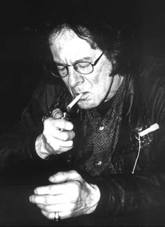
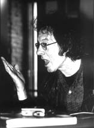
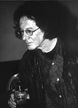
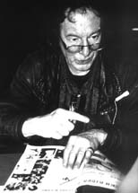

В мае 1998 года Ноэль Реддинг как почетный рок-ветеран был приглашен в Москву Стасом Наминым на открытие «Ритм-Энд-Блюз Кафе». (В интервью он упоминает, что принял участие в росписи фасада). Артур Гаспарян («МК») и я провели это парное интервью. Слегка сумбурное: Реддинг в долгие разговоры не вступал. Казался он человеком спокойным, чуть усталым: Умиротворенным, если только разговор не касался гонораров музыкантов. Вся его автобиография посвящена этой теме. Его можно понять, он нищенствовал, когда мир продолжал раскупать альбомы, в записи которых он принимал не последнее участие. В его автобиографии не слишком много написано о Хендриксе. Зато многократно повторяется назидание начинающим музыкантам: сто раз подумайте, прежде чем ставить подпись под контрактом. Мне больше запомнились рассуждения Реддинга о его новообретенной родине: об Ирландии. Время-де там течет по-своему. Если вы договариваетесь, что гости придут к вам в четыре, то это может случиться и в пять, и в шесть, и в семь. А может, и в три - совсем не так, как в Англии. Он с женой промышлял тогда тем, что собирал и сдавал пустые бутылки. Это нисколько не мешало им вечерами вести беседы, например, с соседом, владельцем крупного туристического бюро.К моменту его приезда в Москву Реддинг уже обвыкся с ролью реликта рок-музыки, в каковом качестве и гастролировал по клубам всего мира.
Андрей Евдокимов, 2003
Да, я первый раз в Москве. Я был раньше в Чехословакии. Ну вот, потихоньку привыкаю. Я теперь живу в Ирландии. По нашим понятиям - еще слишком рано. Разница, кто-то сказал, разница в один час - на самом деле больше. Но я уже привыкаю. Я обнаружил, что здесь очень хорошая еда и люди очень хорошие. И архитектура здесь - невозможно поверить.
АГ - Вы не устали от музыки здесь? От гостеприимства Стаса Намина?
Да, я устал. Я собираюсь отправиться в постель.
АЕ - Вы не собираетесь выступать здесь?
Да, мы в прошлый вторник играли на открытии «Ритм-энд-блюз кафе». Мы здесь играли. И потом мы сделали какие-то записи со Стасом. И прошлой ночью что-то для телевидения, кажется. В каком-то театре. Я не знаю точно, где это было. В любом случае, это было в Москве. Потом, сегодня мы были заняты рисунком там наверху, снаружи на стене - для клуба. Потом Эрик (Белл?) - он сейчас играет у меня на гитаре - тоже сделал свои маленькие рисунки. Потом - обед. А теперь - это интервью. Мы сейчас опаздываем на какое-то рандеву.
АЕ - Вы один из тех, кто изменил музыку этого столетия.
Да. Спасибо.
АЕ - Как по-вашему, а она изменилась с тех пор принципиально, сравнивая сейчас и тогда?
АГ - Да, потому что много спорят - рок-н-ролл мертв или нет?
Это кто-то другой так сказал.
АГ - Философский вопрос, конечно:
Конечно, потому что вещи конца 60-х: вроде «Битлз» и «Роллинг Стоунз», «Джимми Хендрикс Экспириенс» и «Зе Кинкс», «Зе Мув» и так далее, и так далее. Их музыка все еще держится. Она чего-то стоит и сейчас. Я не слушаю современную музыку совсем.
АЕ - Вам не интересно?
Нет.
АЕ - Может быть, Вы объясните, почему?
Да. Все потому, что они все используют драм-боксы и используют сэмплеры. И песни недостаточно хороши. И особенно я ненавижу всю эту рэп-музыку. Я ее называю - «Сраная музыка» (RAP-CRAP). Извините. Я по-прежнему играю музыку. Я играю старые вещи. Понимаете?
АЕ - Там в 60-х музыка была наполнена смыслом (посланием), была способом изменить мир.
О, да.
АЕ - Вы считаете, что это ушло из музыки?
Нет, не совсем. Россия так изменилась за последние годы. Я здесь прежде не был, но с тех пор, как я здесь, мне много об этом рассказывают. И я думаю, что это очень хорошо. Но все мы способны испытывать какой-то страх. Я по-прежнему пишу песни, которые несут созидательные мотивы, если можно это так назвать.
АГ - Последнее время наблюдается Ренессанс старых музыкантов - начиная от «Роллинг Стоунз» и до Пола МакКартни. Не кажется ли ему, что это попытка зайти в ту же воду третий или четвертый раз.
Это только желание получить больше денег или снова быть на вершине чартов, это может быть мотивацией.
АЕ - Может быть, просто музычку поиграть?
Может быть.
АГ - Когда-то они были на вершине. Потом оказались внизу. Что это? Пытаются вернуться? Или пришло время Ренессанса? Или что?
ОК. Первое ваше высказывание - попытка заработать деньги, что, может быть, самое трудное для музыканта. Потому, что у меня никогда не было никаких денег на гастролях за 36 лет: Я знаю, что у некоторых музыкантов деньги - тоннами, но у меня дом под закладом, у меня машина, которая принадлежит банку. Я не думаю, что они отправляются выступать, чтобы снова стать знаменитыми. Я не думаю. Если бы у меня был менеджер - потому что я бы не доверял менеджеру - у меня агент - и у меня все больше и больше работы становится сейчас - да? - Я недавно был в Италии вместе с Эриком, я провел два американских турне в этом году, одно - в Англии в этом году. И теперь занят этим в Москве. И потом, на следующей неделе я отправляюсь в Америку, а потом - снова в Италию. А потом - снова в Англию. Так что я получаю снова всю эту работу. Но я полагаю, как вы сказали, быть музыкантом, понимаете: Первое, если я провожу неделю дома - мне становится скучно. Вы понимаете, что я имею ввиду - скучно. Вот почему я живу в Ирландии, где я играю каждую пятницу вечером у себя дома, и я могу играть.
АЕ - Один? Просто импровизируете?
Нет, Нет - у меня группа. Разные группы. У меня барабанщик и еще один гитарист. Иногда я играю на басу.
АЕ - Послушать бы:
И мы играем все - никаких репетиций - мы никогда не репетируем. Мы не проводим саундчеков. Просто включаем. Пьем пиво. И играем. И мы играем самые разные вещи. Вещи Боба Дилана, вещи Бадди Холли, мы все делаем. Вот так я люблю работать, так я делаю последние лет десять. И это лучший способ работать - если у вас есть музыканты, у которых то же отношение к этому. Во сколько концерт? Скажем, в 9 часов. Мы приезжаем на место уже после половины девятого. Пропускаем по одной. Играем - в 9 часов. И потом уезжаем. Или остаемся, чтобы пропустить понемногу. И потом уезжаем. Все это, что связано с саундчеками - и так далее и так далее - это все вздор. И я отказываюсь этим заниматься.
АГ - Но поколения меняются. И в музыке тоже. И что вы думаете, как один из отцов рок-н-ролла, о современном поколении музыкантов, тех, кто сейчас на вершине. Я имею в виду <Продиджи>, <Юту> - их послание - то же, или оно с вашей точки зрения отличается от послания, которые вы пытаетесь открыть миру?
Во-первых, все музыканты, которых я слышал в Москве, были очень хороши, действительно. Все гитаристы:
Что касается второй части. Я могу сказать, что у всех молодых теперь есть машины для точной настройки, педали и многое другое, чего не было у нас в 60-х. У нас была только гитара, усилитель и шнур. В-третьих, я хочу сказать, что все они хотят стать звездами. Они все хотят попасть на телевидение и прочий вздор. Все они хотят стать звездами. Я, когда стал профессиональным музыкантом, не хотел стать звездой, чтобы меня знали в Америке. Я хотел стать профессиональным музыкантом. И, к счастью, а так же, к несчастью.
АГ - Они не такие искренние.
Правда, правда.
АГ - Какими были вы.
Да. Я просто хотел стать профессиональным музыкантом. И потом, к несчастью, плюс к счастью, «Джими Хендрикс Экспириенс» стали великими (прославились). И мне пришлось поездить по миру, и это было удивительным переживанием. Я играл с Джими три года. И я был очень молод. - Кэнди, принесешь мне «туборг»? - Сейчас так много групп. Когда мы начинали, в Лондоне было не так уж много групп. Но это были хорошие группы. Но сейчас повсюду, в Лондоне и Нью-Йорке, эти молодые группы вынуждены платить клубам, чтобы там сыграть, надеясь, что там они получат контракт на запись альбома. Я даже знаю группы, которые никогда не играли перед публикой. Они искали контракт на запись. Вот все, что им нужно - чтобы они могли стать звездами. Это, я считаю, тупой подход. Нужно быть профессиональным музыкантом. Таково мое мнение.
АЕ - Когда вы начинали, в Лондоне был в разгаре блюзовый бум. Вы играли блюз до того, как присоединились в «Джимми Хендрикс Экс».(ДХЭ)?
Я играл в Германии до того, как присоединился в ДХЭ, в клубах в Германии. Мы время от времени играли несколько блюзов, но, главным образом, в Германии мы играли поп-музыку, потому что это было то, что германцы хотели услышать. Мы делали несколько блюзов время от времени. Когда я начал работать с Хендриксом, играть блюз было ОК, потому что я - исполнитель рок-н-роллов. Митч Митчел - развивался под влиянием джаза.
АЕ - До того, как появилась группа ДХЭ, никто не знал Хендрикса, особенно в Лондоне. Его игра была революционной для того времени. Когда он начал выступать перед лондонской публикой, не было ли какого-то непонимания у публики - на первых порах?
Так. Хендрикс играл только в аккомпанирующих ансамблях, он играл со многими, с Литл Ричардом, например, с Тиной Тернер. И Час Чандлер, бывший басист из Энималз, который умер в прошлом году, светлая память, в последний американский тур «Энималз» в 1966г. пошел в какой-то клуб и увидел, как играет Джими. И он получил огромное впечатление. И взял его с собой в Лондон, Час это сделал. И в основном, постепенно, собрал группу. И примерно через месяц мы уже отправились на гастроли во Францию, в 1966м, в октябре.
АЕ - Это был успех с самого начала, или потребовалось время на то, чтобы публика поняла игру Хендрикса.?
Первый наш тур во Франции мы провели вместе с Джонни Холлидеем. Нас принимали достаточно хорошо. И мы играли в клубах, в Лондоне, в очень маленьких клубах. Вы знаете, и «Битлз» и «Роллинг Стоунз» - все вышли из клубов. И в наш второй небольшой тур мы поехали в Мюнхен, в Германию. И в ноябре 1966 мы играли в этом клубе, который назывался «Биг Эппл». Дней пять. И потом вернулись в Англию. Потому что тогда мы базировались в Лондоне. И тогда записали «Хей Джо». «Хей Джо» вышел в январе 1967 и стал хитом.
АГ - Я бы хотел вернуться к вопросам о лозунгах рок-музыки. Многие изменилось с тех пор. И единственное, что осталось, - это вопрос о наркотиках и алкоголе. Которые очень актуальные для музыкантов. Для их творчества, деятельности и мыслей. И время от времени многие музыканты используют это. Потому, что это считается какой-то частью рок-культуры. И время от времени они пытаются проводить какие-то акции против наркотиков.
Ха.
АГ - Что вы думаете об этих противоречиях. Они сами используют и обращаются к публике с призывом воздержаться.
Ха-ха.
АГ - Что вы думаете? Публика им верит?
Мое личное мнение, что все музыканты, которых я знаю, пьют пиво. И у них нет другого опыта. Кроме виски - иногда, после концерта. Они держатся пива. Я говорю о тех музыкантах, которых я знаю. Из тех людей, с кем я общаюсь, никто больше не употребляет кокаин или героин. А я вообще никогда их не принимал. И мы не проповедуем публике, что употреблять. Пусть решают сами.
АГ - Вы считаете, эти лозунги достигнут результата?
Нет, совершенно. Что на самом деле следует сделать - это легализовать все. Так, что бы те, кто употребляет героин, могли пойти в героиновый магазин. И полиция пусть знает, кто употребляет героин. И можно будет забыть о криминальных элементах, которые сейчас занимаются посредничеством при приобретении наркотиков. Потому что тысячи людей употребляют героин и кокаин. Так? Они говорят: легализуйте! Пусть за это платят настоящие деньги - правительству Колумбии и Пакистана, и соответствующие налоги. Пусть будут кокаиновые магазины, героиновые магазины. И марихуановые магазины. Потому, что пиво можно купить где угодно. Так? И полиции будет легче работать. Потому, что посредники, гангстеры, окажутся не у дел. Это уже давно доказано в Голландии. Это вовсе не проблема. Там можно зайти в любой кабак, кафе-бар и получить любою дурь. Там это контролируется. Там это сделали в 1967м.
АГ - Что вы думаете о современной эстетике рок-музыки? Это хорошо, культура наркотиков, которая слышна повсюду, и в музыке Мадонны, и в музыке «Аэросмит»? Этих электронных звуках, этом хип-хопе. Этой техно-музыке? Не слишком ли это плохо с этой точки зрения. Даже Мадонна сказала, что ее музыку лучше слушать, когда ты под кайфом.
Она сама наркотики не употребляет. Перед этим интервью она выпила бокал шампанского, я так полагаю. Все дело в том, что, как вы сказали, новая музыка, все эти люди, особенно в Западной Европе (мы сейчас в Восточной Европе), принимают экстази. Вы слыхали об экстази?
АГ - Да.
(разочаровано) ОК. В основном это спиид, его называют ЭмДиЭмЭй, который изобрел Граутц в 1916. Это был спиид (кислота), для людей в депрессии. Теперь его называют Экстази, узнали как его делать. Делать его очень просто. Это будет стоить вам примерно полрубля, чтобы его сделать. Его продают за 25 фунтов - сколько это в рублях? И все эти детишки принимают его, отправляются в эти клубы и болтаются там всю ночь напролет, слушая эту новую музыку. Но по-настоящему они ее не слушают. Они, вероятно, в это время не в своем уме. Я сам попробовал спиид много лет назад. Больше не стану никогда. Экстази, в основном, это - спиид. И, когда говорят о молодом поколении, слушающем всю эту чепуху, ну так они ее не слушают! По всей Западной Европе в пятницу вечером, в субботу, принимают экстази - пару таблеток, и идут в клуб и отрубаются. Что странно, не так ли?
АГ - Может быть, чисто теоретический вопрос. Если бы Джими Хендрикс не умер, что вы думаете, случилось бы теперь? Вы отправились бы в большой тур как «Роллинг Стоунз», или каков был бы сегодняшний день ДХЭ?
Как вы только что сказали, вероятно, мы бы сделали что-то вроде того, что делают «Роллинг Стоунз», потому что нам никогда не платили раньше. Мы получали удовольствие от игры друг с другом. Вероятно, «Экспириенс» давали бы концерты тут и там.
АГ - Что вы помните о первых моментах, когда получили известие о его смерти?
Это было в Нью-Йорке. Это было в моей комнате, в отеле. Мне позвонили, сказали, один твой друг умер. Я спросил - кто? Мне сказали: Джими Хендрикс. Он оказался первым среди моих друзей, кто умер. И я был абсолютно потрясен. И потом много девушек пришло ко мне в номер, они хотели выброситься из окна, потому что только что услышали, что он умер. Я с ними пошел в церковь. И после церкви мы пошли в пивную, и я напился.
АЕ - Вы помните эту запись (ДЖЭ на БиБиСи)?
О, да. Это 1967, сейчас это переиздают. Выпускают то, что мы раньше не использовали. Это из программы «Вуду», которую мы играли тогда.
АЕ - Несколько слов о ней?
О БиБиСи говорят, что она старомодна. Все записывается предварительно. На БиБиСи работают профессионалы. Все эти сессии в основном делались очень быстро. Но мы все равно все записывали с одного раза. Ты заходишь туда, записываешься. Делаешь перерыв. Минут десять. Возвращаешься. Публики на записи не было.
АГ - Мой последний вопрос как к опытному человеку. Каков ваш прогноз на будущее этого культурного феномена - рок-музыки? Она действительно мертва? Или у этой музыки есть будущее? И какое будущее?
Вовсе не мертва. Мы только что вернулись после двух американских туров. Мы играли рок-н-ролл. И мы провели турне по Англии, вместе с Эриком (он уже уехал), итальянский тур. Мы играем все время рок-н-ролл, и все залы у нас были заполнены. И у меня уже намечен еще один тур по Италии. Я выступаю в Америке, Италии. И он - все еще жив. Это хорошо.
АГ - Что, вы думаете, люди будут говорить о рок-музыке лет через сто? Как ее будут принимать - как классику, как сейчас Моцарта и Бетховена, или как-то по другому?
Ну нас тогда не будет.
АЕ - А вдруг люди прочтут ваши слова и скажут - он это предвидел и предсказал.
Пусть читают мою книгу.
Я думаю, все вернется. Мы играли песню Чака Берри «Джонни Би Гуд», сколько этой песне - лет сорок с чем-то, звучит как новая. Я много думаю о музыке 50-х, сравнивая ее с музыкой сейчас. И я думаю, все снова изменится, и снова вернутся к людям, которые действительно умеют играть как следует. Выступают в таких местах как это, с усилителем, колонками, ударной установкой - и играют. Вы понимаете, что я имею ввиду?
АЕ - Когда вы выступаете, вы по-прежнему играете вещи Дж.Хендрикса?
Да - с моей американской группой. И здесь с Эриком Бэллом, который раньше играть в «Тин Лиззи», и барабанщиком Стаса, не помню его имени, но он очень-очень хороший. Мы сделали «Стоун Фри» и еще пару вещей из «Экпириенс». Мы сыграли песню «Тин Лиззи», сыграли какие-то блюзы, что-то из Элвиса Пресли, что-то из «Битлз». Вот что мы играем.
 |
 |
 |
Фотографии Татьяны Карасевой